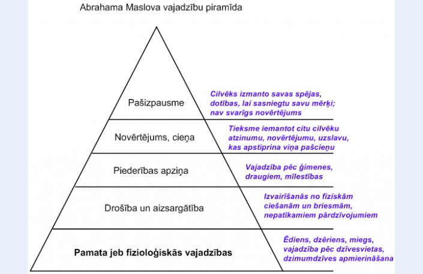

Mārketings
Marija Dubicka, Rīga 2016
Kas ir mārketings?
- Mārketings ir atbilde uz jautājumu, kā konkurēt, izmantojot citus argumentus, ne tikai cenu.
- Mārketings nav īstermiņa pārdošanas centieni, bet gan ilgtermiņa investīcijas.
- Mārketinga vadība ir māksla un zinātne izvēlēties mērķa tirgu un iegūt, uzturēt un attīstīt patērētāju vajadzības, radot, komunicējot un sniedzot patērētājiem augstu vērtību. (Kotlers, 2007)
Mārketinga funkcijas veido sekojošus jēdzienus:
- Vēlme
- Vajadzības
- Pieprasījums
- Produkts
- Maiņa
- Darījums un tirgus
Sākotnējā ideja mārketinga pamatā ir cilvēka vēlmes ideja.
Vēlme ir kaut kā trūkuma sajūta.
Cilvēku vēlmes ir daždažādas un sarežģītas, taču kopumā to daudzums neapšaubāmi atšķiras no vajadzību daudzuma.
Ja vēlme nav apmierināta, cilvēks jūtas neapmierināts un tiecas vai nu atrast objektu, kas spēj šo vēlmi apmierināt, vai arī mēģina šo vēlmi apslāpēt.
Cilvēka vēlmju transformācijas stadijas aprakstīja Ābrahams Maslovs.

Cilvēka vēlmes saskaņā ar piramīdu tiek izkārtotas no zemākās pakāpes līdz augstākai.
Maslova piramīda ir cilvēka vajadzību pakāpju hierarhijas koncepcija, kuras pamatā ir tēze par to, ka cilvēka vajadzības rodas un tiek apzinātas pakāpeniski, secīgi, pēc kārtas no pašām vienkāršākajām, fizioloģiskajām līdz sarežģītām, sociālām vajadzībām.
Citiem vārdiem sakot, kamēr nav apmierinātas zemākas kārtas vajadzības, indivīdi neapzinās un necenšas apmierināt augstāka līmeņa vajadzības.
Vajadzība ir vēlme, kas ir ieguvusi specifisku formu atbilstoši indivīda kultūras līmenim un personībai.
Vajadzības izpaužas objektos, kas spēj apmierināt vēlmi tai manierē, kas piemīt konkrētas sabiedrības vai sociālās grupas kultūras iekārtai.
Progresīvi attīstoties sabiedrībai, pieaug arī tās locekļu vajadzības.
Pārdevēji bieži vien jauc vajadzības ar vēlmēm.
Pieprasījums ir vajadzība, ko pamato pirktspēja.
Nav grūti uzskaitīt konkrētas sabiedrības prasības konkrētā laika brīdī, pie tam sabiedrība varētu plānot ražošanas apjomus nākošajam gadam, balstoties uz prasību kopumu iepriekšējā gadā. Aptuveni tā arī notika ar ražošanas plānošanu PSRS. Taču prasības ir nepastāvīgs rādītājs.
Cilvēks parasti izvēlas produktu, kura īpašību kopums nodrošina viņam vislielāko apmierinājumu par doto cenu, ņemot vērā savas specifiskās vajadzības un resursus.
Produkts ir viss, kas spēj apmierināt vajadzību vai vēlmi un tiek piedāvāts tirgū ar mērķi piesaistīt uzmanību, tikt iegādāts, izmantots vai patērēts.
Produkti var neatbilst vajadzībām, tie var atbilst daļēji un, visbeidzot, tie var pilnībā atbilst vajadzībām, tas ir, var būt tā saucamie ideālie produkti.
Jo pilnīgāk produkts atbilst patērētāja vēlējumam, jo lielākus panākumus gūs ražotājs.
Jēdziens "produkts" neaprobežojas ar fiziskiem objektiem. Par produktiem var saukt visu, kas spēj sniegt pakalpojumu, tas ir, apmierināt vēlmi.
Bez izstrādājumiem un pakalpojumiem tie var būt personas, vietas, organizācijas un darbības veidi un idejas.
Maiņa ir mārketinga kā zinātniskās disciplīnas pamatjēdziens.
Tās veikšanai nepieciešams ievērot četrus nosacījumus:
- Katram dalībniekam ir jābūt kam tādam, kas varētu šķist vērtīgs citam dalībniekam
- Katram dalībniekam jābūt spējīgam veidot saskarsmi un piegādāt savu preci.
- Katram dalībniekam ir jābūt pilnīgi brīvam pieņemt vai noraidīt otra dalībnieka piedāvājumu.
- Katram dalībniekam jābūt pārliecinātam par savu vēlmi un mērķtiecību kārtot maiņu ar otru dalībnieku.
Šie nosacījumi rada vien potenciālu maiņas iespējamību. Vai maiņa notiks, tas ir atkarīgs no vienošanās starp dalībniekiem par maiņas nosacījumiem. Ja maiņa ir mārketinga kā zinātniskās disciplīnas pamatjēdziens, tad galvenā mērvienība mārketinga jomā ir darījums.
Darījums ir divu pušu komerciāla maiņa ar vērtībām. Piemēram, pircējs atdod pārdevējam noteiktu naudas summu un saņem sev vēlamo preci. Šis ir klasisks naudas darījums.
Bartera darījumā notiek maiņa ar lietām, - saulespuķes maina pret metālu, - vai pakalpojumiem: jurists sastāda testamentu ārstam apmaiņā pret veselības stāvokļa pārbaudīšanu.
Darījums paredz virkni nosacījumu:
- Vismaz divus vērtības ziņā nozīmīgus objektus
- Saskaņotus darījuma īstenošanas noteikumus
- Saskaņotu darījuma īstenošanas laiku
- Saskaņotu darījuma īstenošanas vietu
Kā likums, darījuma noteikumus atbalsta un aizsargā likumdošana.
No jēdziena "darījums" var pāriet tieši pie jēdziena "tirgus".
Tirgus ir produkta esošo un potenciālo pircēju kopums. Atšķirīgās ekonomiskās sistēmās atšķiras arī cilvēku vēlmju apmierināšanas paņēmieni.
Tirgus var veidoties uz kādu atsevišķu produktu vai pakalpojumu, kam ir vērtības nozīmīgums. Piemēram, darba tirgus sastāv no cilvēkiem, kas vēlas piedāvāt savu darbaspēku apmaiņā pret darba samaksu vai precēm. Naudas tirgus apmierina cilvēku vēlmes, dod iespēju aizņemties, aizdot, krāt naudu un garantēt tās drošumu.
Stratēģiskais mārketings ir uzņēmējdarbības funkcija, kas definē neīstenotas vajadzības un vēlmes, nosaka un izmērī to iespējas un potenciālo ienesīgumu, nosaka, kādus mērķa tirgus uzņēmums varētu vislabāk apkalpot, pieņem lēmumu par atbilstošākajiem produktiem, pakalpojumiem un programmām, kas kalpotu šiem tirgiem, kā arī aicina visus uzņēmuma dalībniekus domāt un kalpot patērētājam. (Kotlers,2007)
Stratēģiskais mārketings ietver:
- Kā analizēt tirgus iespējas
- Kā var segmentēt tirgu
- Kādā veidā nomērķēt uz tirgu un kā piedabūt viņus nopirkt
- Kā attīstīt mārketinga mix
- Kā izveidot mārketinga programmu
Stratēģija:
- Vārds stratēģija cēlies no grieķu valodas- militārais vadonis
- Stratēģija ietver visas uzņēmuma būtiskākās darbības, norādot uzņēmuma darbības virzienu un eksistences mērķi, kā arī stimulē nepieciešamās pārmaiņas, kuras nosaka darbības vide
- Stratēģija ir līme, kas veido un nodrošina pastāvīgu un atšķirīgu vērtību piedāvājumu Jūsu mērķa tirgum. (B. Hendersons)
- Ja jums ir tāda pati stratēģija kā konkurentam, Jums nav stratēģijas
- Ja stratēģija ir atšķirīga, bet vienkārši atkārtojama, tā ir vāja stratēģija
- Ja stratēģija ir unikāla un atšķirīga un to ir grūti kopēt, Jums ir spēcīga un ilgtspējīga stratēģija
Uzņēmumiem ir unikāla stratēģija, ja:
- Tie ir definējuši mērķa tirgu un vajadzību
- Tie ir izveidojuši atšķirīgu un labāku vērtību piedāvājumu šim tirgum
- Tie ir izveidojuši atšķirīgu piegādes tīklojumu, lai sniegtu vērtību piedāvājumu mērķa tirgum
Stratēģijas plānošana ir process, kurā uzņēmums izstrādā iespējamo rīcību un gūst atbildi uz to, kā virzīties tālāk, kāda būs uzņēmuma nākotne
Veidojot stratēģiju:
- Jāzin uzņēmuma misija un vīzija
- Jāzin kādā vidē uzņēmums darbojas
- Jāzin ko uzņēmums dara labi
- Kāds ir plāns
- Īstenošana un kontrole
Stratēģiskā virziena noteikšana
To nosaka, definējot vīziju, misiju un galvenos uzņēmuma mērķus
Misija
Misijā tiek definēts uzņēmuma eksistences iemesls, sfēra , kurā tas darbojas, klienti, kā apkalpo, prasmes, ko uzņēmums cenšas attīstīt, lai sasniegtu savu vīziju. Misija parasti formulējas mazāk kā 25 vārdos.
Mērķi
- Konkrēts stāvoklis vai gala rezultāts, ko izvirza un cenšas sasniegt kopīgā darbā apvienojusies grupa.
- Mērķi mēdz būt daudzveidīgi – pēc nozīmīguma, laika faktora, vadības izvirzīti, kopīgie, indivīda utt.
- Mērķis ir plānošanas funkcijas galvenais instruments.
- Sintezēt mērķi nozīmē visu darbinieku un struktūru darbības koordināciju, sinerģisko saišu izveidi, komunikatīva efekta sasniegšanu.
Mārketinga mērķi
- Mērķi ir rezultāti, kas jāsasniedz vidējā vai ilgā laika posmā (piemēram, jāpalielina tirgus daļa par 5% trīs gadu laikā).
- Mērķi sadala formulēto misiju atsevišķos visa uzņēmuma specifiskos uzdevumos, darbībās un mērķa rezultātos.
Mārketinga mērķi varētu būt šādi:
- Finansiāli: tirgus daļa, apgrozījums, peļņa, investīciju atdeve u.c.
- Teorētiski: iespējas, formulēti uzdevumi, kas atspoguļo uzņēmuma pamatvērtības;
- Kvalitatīvi: pakalpojumu līmenis, jauninājumi u.c.
- Produkta, cenas, sadales, virzīšanas, papildpakalpojumu plānošana.
Mārketinga vadība – process kā tiek vadītas lietas:
- Plānošana
- Koncepcijas pārdošana
- Produkta veidošana
- Cenu veidošana
- Virzīšana
- Sadale
- Pakalpojumi
Patērētāji - konkurenti - uzņēmums
Patērētāji
- Cilvēki pērk vienu un to pašu preci dažādu iemeslu dēļ. Tāpēc Jums jānoskaidro – kāpēc viņi pērk?
- Cilvēki atšķirsies – kas pērk ekonomijai, iespējams maksās vairāk, jo gatavs nēsāt vairākas reizes.
- Kas pērk, lai Ziemassvētkos ietu ķekatās, lai dabūtu konfektes – nemaksās tik daudz.
- Bērnam nemaksās tik daudz, jo nākošgad mazs.
- Uzņēmumiem jāuzskata patērētāji par vienu no finanšu aktīviem, kas ir jāvada un jāpalielina tieši tāpat, kā uzņēmumi parasti rīkojas ar aktīviem.(P.Drukers, 2006)
- Patērētājs ir visbūtiskākais mūsu apmeklētājs. Viņš nav atkarīgs no mums – mēs esam atkarīgi no viņa. Viņš nav svešinieks mūsu uzņēmumā – viņš ir daļa no tā. Mēs neizdarām viņam pakalpojumu, sniedzot viņam pakalpojumus, bet... Viņš izdara mums pakalpojumu, dodot mums iespēju to darīt. (L.L. Bīns, 2005)
- Ļoti bieži uzņēmumi 70% mārketinga budžeta izlieto jaunu patērētāju piesaistei, lai gan 90% ienākumu dod esošie patērētāji.
- Naudu iegūstam no patstāvīgajiem klientiem nevis jauniem!
- Uzņēmumam vieglāk mēģināt noturēt “vecos” klientus nekā visu laiku piedabūt jaunus.
- "Vecajam" klientam vajag mazāk naudas.
Ko dara uzņēmums, lai paturētu patstāvīgos klientus?
Lai piesaistītu klientus - klientam jābūt apmierinātam.
- Apkalpojiet savus patērētājus tā, kā Jūs vēlētos, lai viņi apkalpo jūs.
- Klienti kļūst lojālāki pret uzņēmumu, ja viņi zina, ka kaut ko dara tieši priekš viņa.
- Ja klients ir apmierināts, viņš nemeklē citu un ir gatavs maksāt mazliet vairāk.
- Apmierināts klients pērk vairāk, biežāk, lielākā daudzumā.
- Ir aprēķināts, ka lai iegūtu apmierinātu jaunu klientu – ir jāizdod 5 reizes vairāk nekā lai paturētu veco.
Tie, kas veido mārketingu, ar klientu veido kontaktus:
- Pirms pirkuma (meklējam internetā, reklāmas utt.)
- Pirkšanas procesā (pārdevējs).
- Pēcpirkuma periods.
Kad Jūs nopērkat:
- Mārketinga speciālisti uztraucas, lai Jūs paliekat lojāli, atteiktu citiem.
- Preces kvalitātei jābūt pietiekoši labai. Visām precēm nevajag ļoti labu kvalitāti, jo tās pilda dažādas funkcijas.
Lojalitātes programmas
Lojalitāte – vecmodīgs vārds, kas nozīmē dedzīgu uzticību savai valstij, ģimenei vai draugam.
Mārketingā vārds "lojalitāte" ienācis ar terminu "zīmola lojalitāte".
- Lojalitātes programmas ieviesa lidsabiedrības.
- Lojalitātes balvu programma – patērētāju attiecību vadības programma.
Patērētāju klasifikācija:
- Visienesīgākie patērētāji – nepieciešama tūlītēja uzmanība
- Vispieaugošākie patērētāji – ilgtermiņa uzmanība
- Visjūtīgākie patērētāji – nepieciešama agrīna iejaukšanās, lai novērstu to aiziešana
- Visproblemātiskākie patērētāji - ???
Vai Jums ir klienti no kuriem Jūs gribat tikt vaļā? Kāpēc?
- Nemaksā rēķinus
- Ir mūžīgi neapmierināti
- Prasa daudz uzmanības...
- Un maz pērk
- Atbaida citus pircējus ar savu imidžu
Kā tikt vaļā?
- Paaugstināt cenu
- Mainīt maksāšanas noteikumus (priekšapmaksa u.c.)
- Apkalpošana viņam neizdevīgā laikā
- Teikt, ka preces nav noliktavā
- Ieteikt, ka pie konkurenta labāka prece
Domājot par klientu , domājiet kā menedžeris, jo ir klienti no kuriem labāk atbrīvoties, jo patērēsiet daudz laika, nervu un peļņa maza.
Kā var definēt/identificēt konkurentus?
Iedomājieties, ka Jūs esat menedžeris, kas izplata kafiju -
- Kā Jūs identificētu savus konkurentus?
- Kādus produktus viņi piedāvā?
- Kāda ir viņu cena?
- Kādu reklāmu izmanto?
Kā Jūs iegūsiet informāciju?
Jums veidojot mārketinga stratēģiju jāspēj:
- Saskatīt – kā segmentēt tirgu?
- Kam to pārdot?
- Par kādu cenu
- Kurā vietā to varēs nopirkt
Segmentācija
- Mārketinga speciālisti cenšas sadalīt tirgu līdzīgās grupās.
- Daudzi uzņēmumi domā, ka var piedāvāt produktu visiem.
- Ļoti bieži mārketinga speciālisti aizmirst par tiem, kas produktu maz lieto.
Tirgus segmentēšanas priekšrocības
Segmentēšanas kritēriji:
- Segmentiem jābūt izmērāmiem;
- Jābūt pietiekoši lieliem, lai to dēļ būtu vērts ražot preci (ja pasaulē būtu nepieciešams tikai 4 cilvēkiem nebūtu vērts ražot);
- Jābūt sasniedzamiem;
- Tam jābūt stabilam;
- Jābūt tādam, kuri domā, ka preci varētu pirkt.
Mērķa tirgus izvēles lēmumu pieņemšana
Tirgus nodrošināšanas stratēģijas
Pozicionēšana
- Dažādas kompānijas dažādos tirgos produktiem veido dažādas pozīcijas.
- Ir ļoti skaidri jāpasaka – ko produkts piedāvā!
- Produkts jāpasniedz atšķirīgi nekā to dara konkurenti.
- Ja mainās tirgus arī produktam un tā pozicionēšanai jāmainās.
Vadlīnijas
- Mēģinu darīt ko tādu, kas konkurentiem nav ienācis prātā.
- Vienmēr konsultējos ar kādu, kas ikdienā nodarbojas ar attiecīgo plānu ieviešanu.
- Negaidu sava darba tūlītējus rezultātus, tomēr sekoju tiem.Nodrošinu, lai informācija, ko sniedzu patērētājiem, starpniekiem, piegādātājiem un visai pārējai sabiedrībai, nebūtu atšķirīga
- Esmu gatavs(a) konkurentu atbildes reakcijai